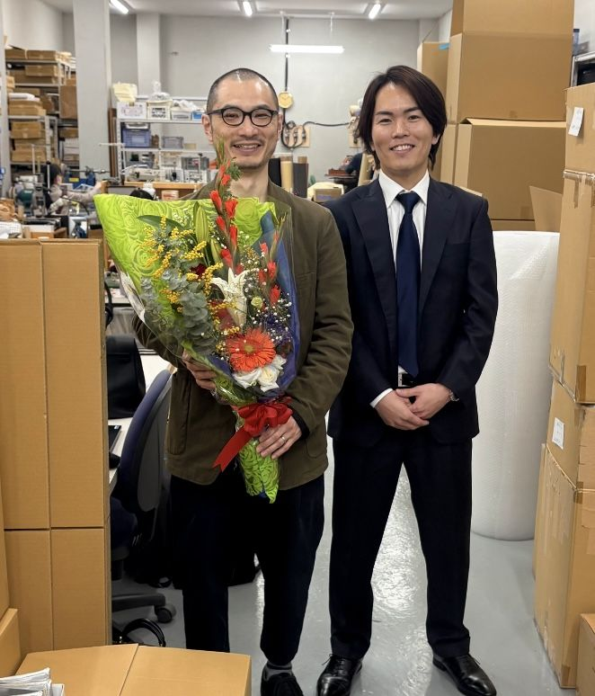
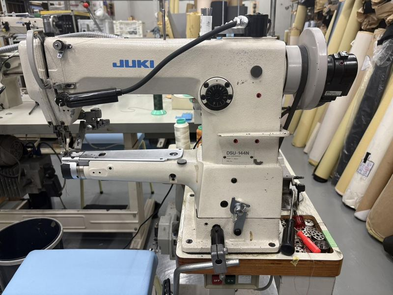
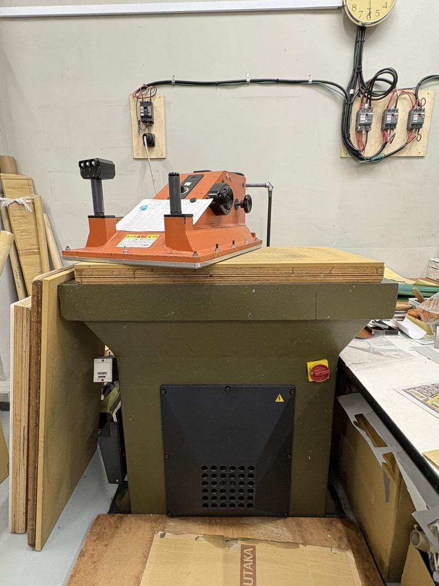
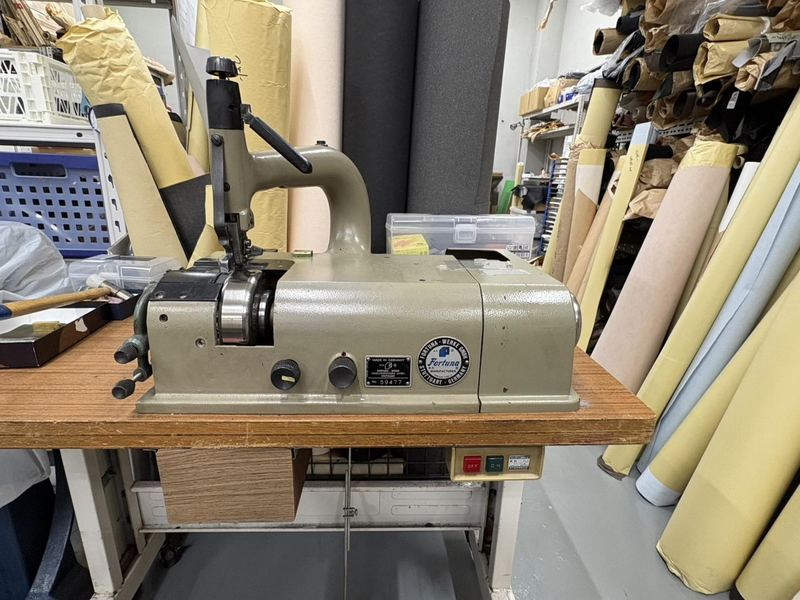
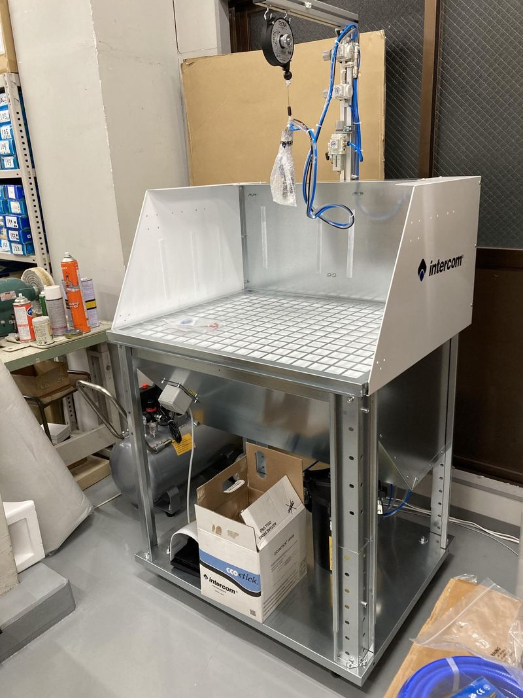
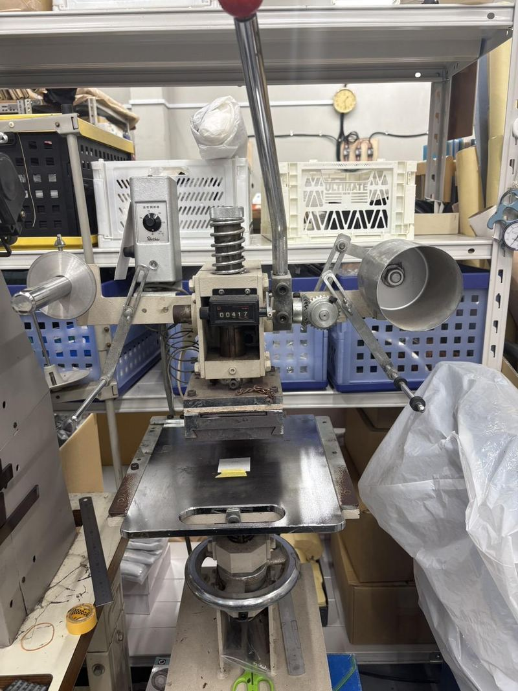

1966
創業
東京都墨田区にて創業。革製品の受託製造を開始する。
1966年創業の革製造工房を事業承継し、60年の職人技にB supplyの営業力とデジタル基盤を掛け合わせています。
日本には、失われるには惜しい技術と物語を持つ会社が数多くあります。
私たちは投資と承継を通じて、その価値を次の時代へつなぎます。
私たちは、外部の出資者から資金を預かるファンドではありません。
自己資金で株式を譲り受ける自己勘定投資会社です。だからこそ、短期的な売却期限に縛られることなく、腰を据えて事業と向き合うことができます。
株式を譲り受けることは、私たちにとってゴールではありません。
むしろ、そこからが本当の始まりです。

第一号案件 ｜ 2026年
1966年創業、60年にわたり一流ブランドの革製品を作り続けてきた工房を承継。職人の技術と雇用をそのまま受け継ぎ、B supplyの営業力とデジタル基盤を掛け合わせて、次の成長を実装しています。
1966年、東京の下町に、一つの革工房が生まれた。
以来60年、職人の手は途切れることなく動き続けてきた。
その手が磨いてきた技を、そこに宿る想いを――
私たちは、次の時代へと紡いでいく。
1966
東京都墨田区にて創業。革製品の受託製造を開始する。
1966–2026
60年間、一流ブランドの革製品（鞄・財布等）を、途切れることなく製造し続ける。
2026
株式会社B supplyが事業を承継。60年の職人技に、営業力・デジタル基盤を掛け合わせる。
60年創業からの歴史
10年+職人の平均経験年数
100%Made in Japan
15社+ブランドパートナー
60年間、途切れることなく一流ブランドに選ばれ続けてきました。
全商品を、国内で製造しております。
01
02
03
04
05
06
全製造工程を国内（墨田区工房）で完結。裁断・縫製・仕上げまで高い技術を持つ多能工体制で、複雑な仕様・高難度のデザインにも応えます。

革・厚物縫製の主力機。安定した直線縫い

袋物・筒状製品、立体的な縫い回し

総合送り機構。厚手の革も安定縫製

柱状ベッドで底・側面など曲面の立体縫製

大型パーツ裁断に最適な業界標準機

厚い革を任意の厚みに均一スライス

革の縁を均一な厚みに漉く。品質を左右する下準備

接着剤をブース内で均一に噴霧塗布

ローラー式で貼り合わせ前処理を高速・均一に

ロゴ・刻印・型押し。温度調節で押印品質を制御

コバ磨き・革表面の仕上げ研磨